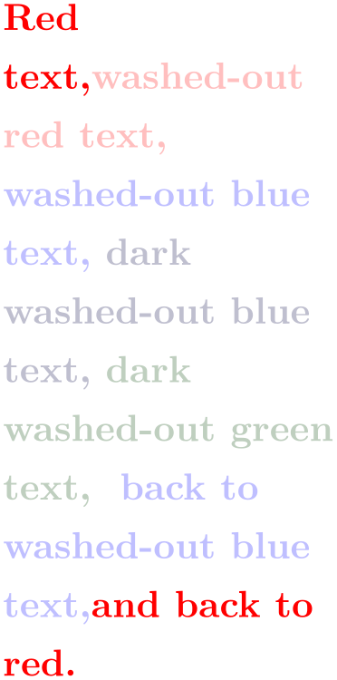

The TikZ and PGF Packages
Manual for version 3.1.10
Utilities
91 Extended Color Support¶
This section documents the package xxcolor, which is currently distributed as part of pgf. This package extends the xcolor package, written by Uwe Kern, which in turn extends the color package. I hope that the commands in xxcolor will some day migrate to xcolor, such that this package becomes superfluous.
The main aim of the xxcolor package is to provide an environment inside which all colors are “washed out” or “dimmed”. This is useful in numerous situations and must typically be achieved in a roundabout manner if such an environment is not available.
-
\begin{colormixin}{⟨mix-in specification⟩} ¶
-
⟨environment contents⟩
-
\end{colormixin}
The mix-in specification is applied to all colors inside the environment. At the beginning of the environment, the mix-in is applied to the current color, i.e., the color that was in effect before the environment started. A mix-in specification is a number between 0 and 100 followed by an exclamation mark and a color name. When a \color command is encountered inside a mix-in environment, the number states what percentage of the desired color should be used. The rest is “filled up” with the color given in the mix-in specification. Thus, a mix-in specification like 90!blue will mix in 10% of blue into everything, whereas 25!white will make everything nearly white.

\usepackage {xxcolor}
\begin{minipage}{3.5cm}\raggedright
\color{red}Red
text,%
\begin{colormixin}{25!white}
washed-out
red
text,
\color{blue} washed-out
blue
text,
\begin{colormixin}{25!black}
dark
washed-out
blue
text,
\color{green} dark
washed-out
green
text,%
\end{colormixin}
back
to
washed-out
blue
text,%
\end{colormixin}
and
back
to
red.
\end{minipage}%
Note that the environment only changes colors that have been installed using the standard LaTeX \color command. In particular, the colors in images are not changed. There is, however, some support offered by the commands \pgfuseimage and \pgfuseshading. If the first command is invoked inside a colormixin environment with the parameter, say, 50!black on an image with the name foo, the command will first check whether there is also a defined image with the name foo.!50!black. If so, this image is used instead. This allows you to provide a different image for this case. If you nest colormixin environments, the different mix-ins are all appended. For example, inside the inner environment of the above example, \pgfuseimage{foo} would first check whether there exists an image named foo.!25!white!25!black.
-
\colorcurrentmixin ¶
Expands to the current accumulated mix-in. Each nesting of a colormixin adds a mix-in to this list.
\usepackage {xxcolor} \usepackage {calc}
\begin{minipage}{\linewidth-6pt}\raggedright
\begin{colormixin}{75!white}
\colorcurrentmixin\ should
be
``!75!white''\par
\begin{colormixin}{75!black}
\colorcurrentmixin\ should
be
``!75!black!75!white''\par
\begin{colormixin}{50!white}
\colorcurrentmixin\ should
be
``!50!white!75!black!75!white''\par
\end{colormixin}
\end{colormixin}
\end{colormixin}
\end{minipage}